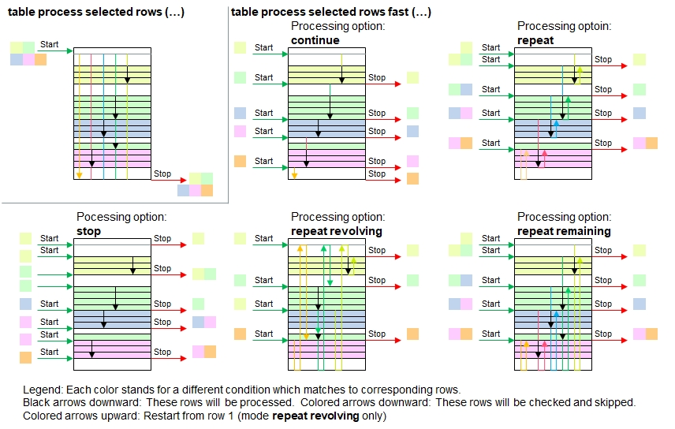

Introduction
The following illustration summarizes the different processing options.

If this function is properly applied, then the processing performance can be increased significantly because checking unnecessary rows
will no longer take place. Assuming you have two tables which are properly sorted by the full persons' names in alphabetic order.
(If they are not, then sort the tables with the function table sort rows(). Table A contains 5,000 names of customers with usual
details such as delivery and billing addresses and phone numbers. Table B contains all the purchases these people have made and contains roughly 20,000 rows.
Your goal: You want to identify the maximum purchase volume every person has done and add these values into a new column in table A (Field: Total Purchase Value).
Conventional Appraoch but Slow
If you use the function table process selected rows (…) for table A to work off every name, and in a nested way on table B to gather all the purchases, the a total of 20,000 x 5,000 = one hundred million rows will be checked and this processor intensive process can take several minutes to complete.
table insert columns( A, Total Purchase Value );
table process( A,
{
name[] = [Name];
sum[] = 0;
table process selected rows( B, [Name]==name[], sum[]+=[Purchase Value] );
[Total Purchase Value] = sum[];
}Much Faster
Let's assume that table A contains the details of all names which are also mentioned in table B, but some customers in table A may not have done purchases recently, so they are not listed in table B. The function table process selected rows fast() uses variable row[ ] as starting point and will be updated after every call.
table sort rows( A, Name ); // Sort the table if not yet in alphabetic order
table sort rows( B, Name ); // "
table insert columns( A, Total Purchase Value );
row[] = 1;
table process( A,
{
name[] = [Name];
sum[] = 0;
table process selected rows fast( B, [Name]==name[], row[], stop, sum[]+=[Purchase Value] );
[Total Purchase Value] = sum[];
} );
Choosing the right Processing option
The 'conventional' appraoch
| Precondition for proper table processing | stop | continue | repeat | repeat remaining | repeat revolving | Convent. Approach |
|---|---|---|---|---|---|---|
| Table A must be sorted | Yes | Yes | Yes | 1st occurrence | Don't care | Don't care |
| Table B must be sorted | Yes | Yes | Yes | Yes | Don't care | Don't care |
| In Table B, all items with the same name must be in one block of adjacent rows. | Yes | Yes | Yes | Don't care | Yes | Don't care |
| All names in Table A must be unique | Yes | Yes | Don't care | Don't care | Don't are | Don't care |
| All names in Table B must also exist in Table A | Yes | Don't care | Don't care | Don't care | Don't are | Don't care |
| All names in Table A must also exist in Table B | Don't care | Don't care | Don't care | Don't care | Don't are | Don't care |
| Processing performance | Very fast | Fast | Fast | Moderate | Slow | Very slow |